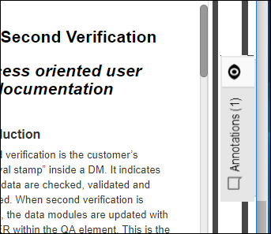
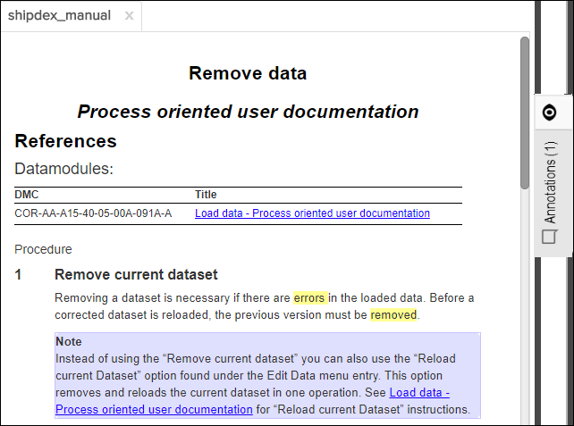
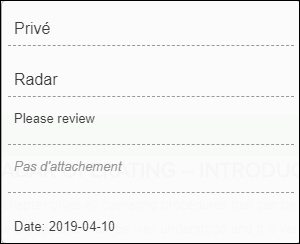
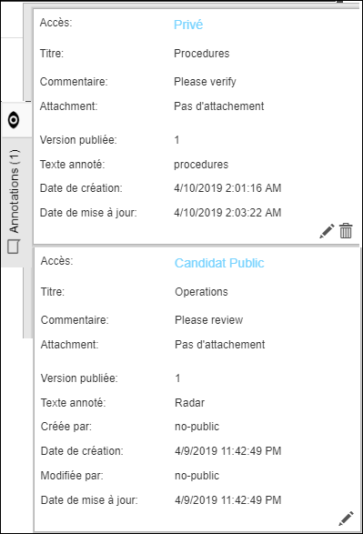

- Privée: Ne peut être visualisée que par l'utilisateur qui l'a créé.
- Publique: Peut être vue par tout le monde.
Cette annotation doit être approuvée par un utilisateur disposant d'une autorisation en écriture avant de pouvoir être rendue publique. Voir Examiner le candidat à l'annotation publique.
Si la fonction d'annotation est activée, vous remarquerez une case "Voir les annotations" dans la marge de droite de la fenêtre de l'application.

Le "0", dans la capture d'écran ci-dessus indique qu'il n'y a pas d'annotations jointes à ce document.
Si les annotations ont été apportées à un document, le nombre d'annotations est affiché dans la boîte et la zone annotée est surligné en jaune:

Notez qu'il y a une icône à
l'intérieur de la zone d'annotation. Si cela est actif (noir, par défaut), vous verrez le
marquage d'annotation, à la fois dans le texte (surbrillance jaune) et sur les graphiques
(carrés rouges). Si vous cliquez sur l’icône,  , par
exemple, les annotations sont masquées.
, par
exemple, les annotations sont masquées.
Si vous êtes autorisé à créer / modifier /
supprimer des annotations et que des annotations de candidat public doivent être examinées,
 l'icône de candidat public apparaît dans l'en-tête
Annotations / Contenu supplémentaire. Le nombre en bas à droite
l'icône de candidat public apparaît dans l'en-tête
Annotations / Contenu supplémentaire. Le nombre en bas à droite
 de l'icône des candidats publics indique combien de candidats
publics se trouvent dans la document.
de l'icône des candidats publics indique combien de candidats
publics se trouvent dans la document.
Pour afficher les annotations vous pouvez soit passer la souris d’ordinateur sur le texte annoté et voir les commentaires dans une boîte de dialogue pop-up, soit cliquer dans la zone grise pour étendre la zone:
Exemple de dialogue contextuel:

- Privé, Public ou candidat public (niveau d'accès)
- Titre
- Commentaire (l'annotation)
- Attachement (indique "Pas de attachement" s'il n'y en a pas)
- Date (la dernière date mise à jour)
Voir un exemple de boîte d'annotations:

- Privé, Public ou candidat public (niveau d'accès)
- Titre
- Commentaire (l’annotation)
- Libération (le numéro de révision de la publication)
- Text annoté (extrait du document annoté)
- Date de création (mise à jour automatiquement)
- Date de mise à jour (mise à jour automatiquement)
 Modifier l'annotation (nécessite des autorisations si l'annotation est publique.)
Modifier l'annotation (nécessite des autorisations si l'annotation est publique.)- Supprimer l'annotation (nécessite des autorisations si l'annotation est publique.)
- Ouvrir la graphique annotée (un document peut avoir plusieurs graphiques, afin d'ouvrir le graphique correct, vous pouvez utiliser ce bouton.)
Pour minimiser la zone d'annotation, cliquez une fois dans la zone d'annotation grise.
Les annotations peuvent être exportées et importées dans Pinpoint. Cette fonctionnalité est spécifiquement destinée à la version autonome de Pinpoint lorsque vous souhaitez migrer des annotations de l'une à une autre instance de Pinpoint autonome. Pour plus d'informations, voir Exporter et importer des annotations.